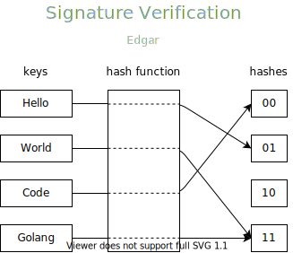
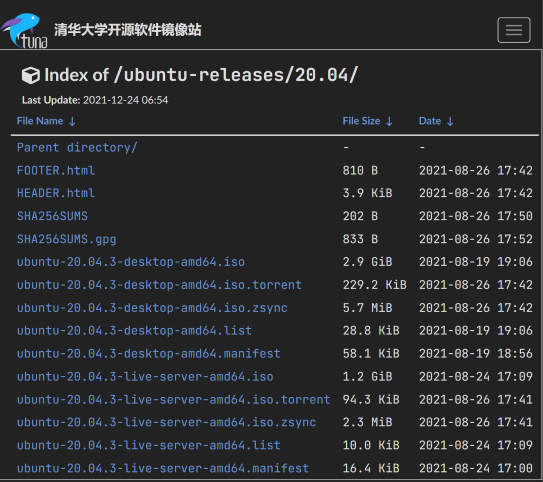

哈希函数
概念
什么是哈希函数？
定义其实很简单，哈希函数其实就是一种映射关系，它可以把任意长度的数据映射为固定长度的数据，输出一般称为摘要(digest) ，就比如常见的 md5 算法，可以将输入映射成 128 bits。
$$\{0, 1\}^* \overset{map}{\longrightarrow} \{0,1\}^n$$
同时，也正因为说，哈希函数将任意长度的输入映射成固定长度的输出，因为输入空间远大于输出空间，所以必然会存在冲突，比如下面的这种情景。不过，在实际使用的时候，必须要求哈希函数具备一定的安全性。
要求
以下只是几点比较重要的
计算 digest 比较快
因为我们往往需要对大量的数据计算哈希值，如果计算速度慢，会影响整个系统的性能。
抗第一原像
又称 Preimage resistance。
已知某个哈希值 $y$ 和哈希函数 $H$，找出 $x$ 满足 $H(x) = y$ 在计算上不可行。
抗第二原像性
又称 Second-preimage resistance。
已知某个输入 $x$ 和哈希函数 $H$，找到 $x^{\prime}$ 满足 $H(x^{\prime}) = H(x)$ 在计算上不可行。
抗碰撞性
又称 Collision resistance。
已知哈希函数 $H$，找出任意一对 $x^{\prime}, x$， 且 $x^{\prime} \neq x$ 满足 $H(x^{\prime}) = H(x)$，在计算上不可行
应用
文件校验
网站上的文件，在下载的时候，往往会提供一个摘要来检验文件是否下载完整，比如说下图^1的 SHA256SUMS 文件
数字签名
数字签名有类似书写签名的作用，可以对数据提供身份校验以及完整性校验。
我们经常访问的 HTTPS 网站均提供了数字证书，为的就是校验这个网站颁发给我们的公钥是不是这个网站的，还是其他人伪造的一个公钥，点击网址签名的小锁 🔒。
进入 Connection is secure，然后点击右上角的证书图标，我们可以看到数字证书中的内容。
Go 中哈希函数使用示范
Golang 中提供了许多哈希函数，比如 md5，sha1，sha256，sha512 等，并且通过接口 hash.Hash 暴露，使用起来十分简单，下面以 md5 做示范。
1 | package main |
生活杂笔，学习杂记，偶尔随便写写东西。